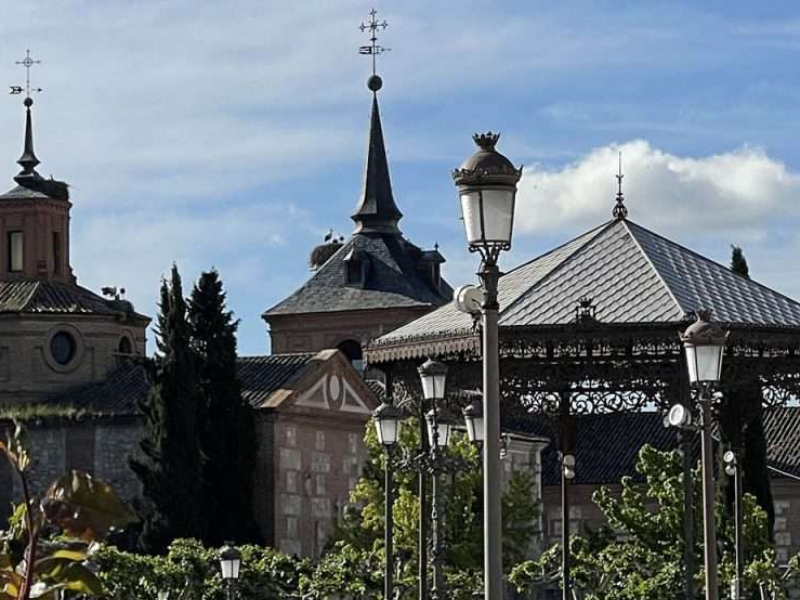
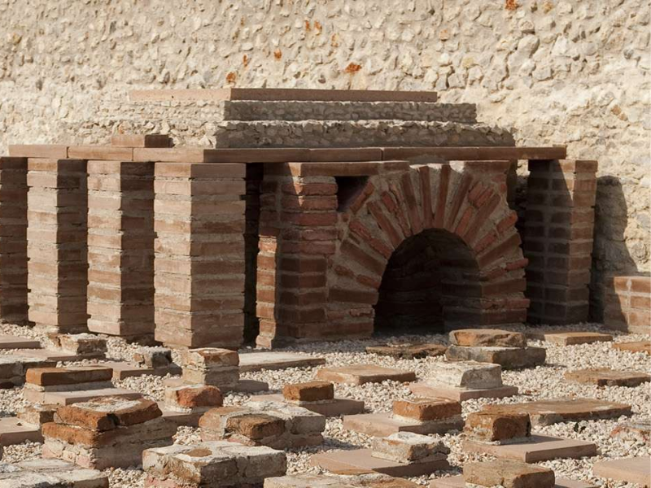
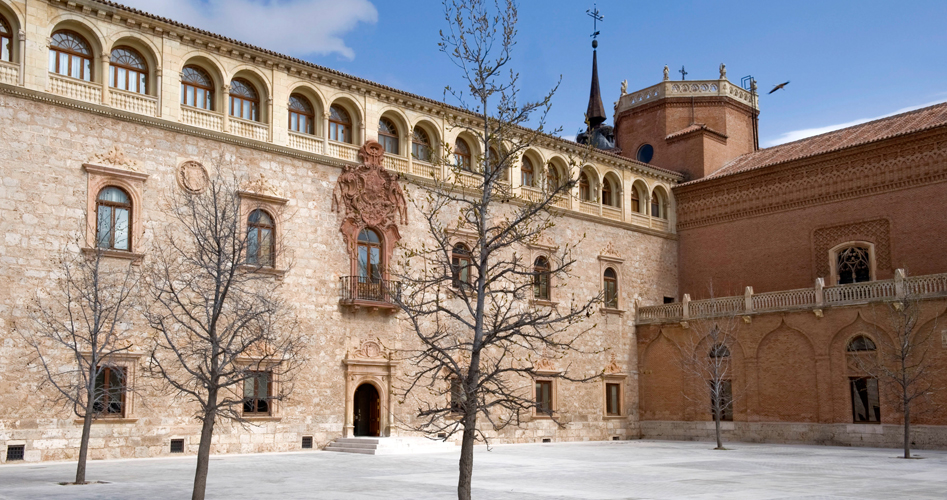

Discover the Charm of Alcalá de Henares

Plaza de Cervantes
The heart of Alcalá de Henares, this historic square is named after the famous Spanish writer Miguel de Cervantes.

Ciudad Romana de Complutum
Located near the city center, this ancient Roman city was once the capital of the province of Hispania Tarraconensis and is now a UNESCO World Heritage Site.

Palacio Arzobispal
This magnificent palace was once the residence of the Archbishop of Toledo and is now a museum showcasing the history of Alcalá de Henares.